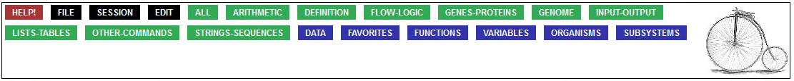

OVERVIEW
This is the palette, positioned at the top of the screen:

Mousing over any of button displays a menu that offers access to a slice of BioBIKE functionality.
The green buttons bring you to specific BioBIKE functions that can be brought down to your workspace.
The blue buttons generally provide access to data.
DETAILS